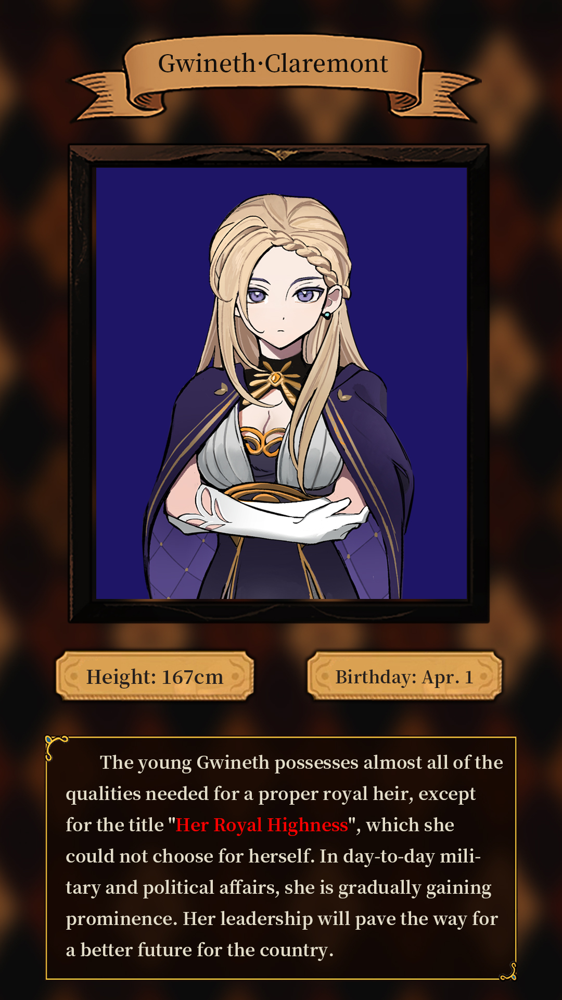
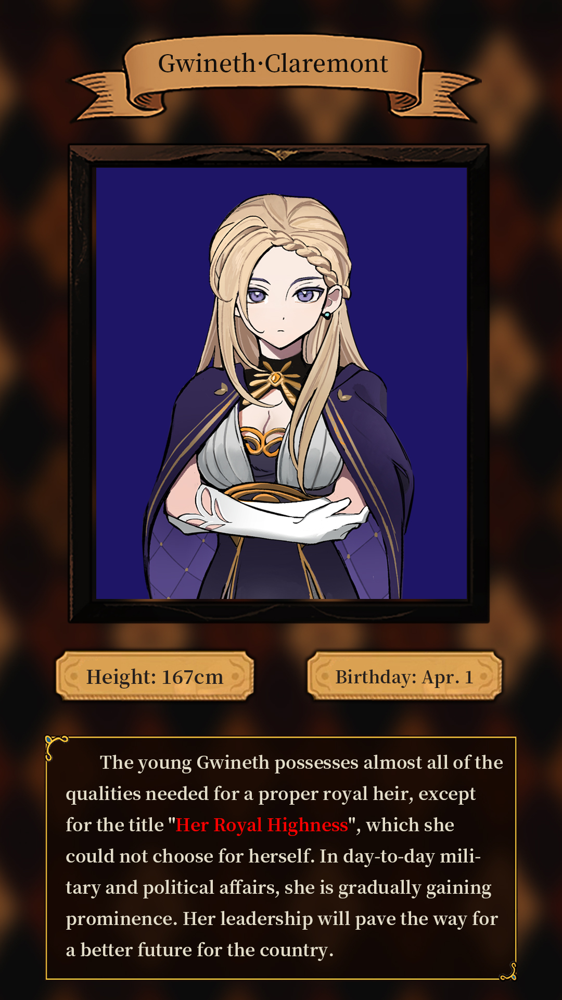

Lords Choice
The daughter will enter the Knight Academy at the age of 12. The Knight Academy has three lords, each representing a different domain. Rebessa-Rollers represents combat, Gwineth-Claremont represents intercourse, and Kraut-Brain represents life. Joining one of the lords means achieving the "knight's goal"——Each goal will correspond to four levels of demand, which contains a large number of tasks, such as Rebessa is combat-related, Gwineth is the ball, performance, part-time jobs and other social-related, Kraut is farming, horse racing and other life-related. Complete the knight's goal can get a lot of money and prestige rewards. At the same time, the choice of the lord can affect the ending of the subsequent game~
 
